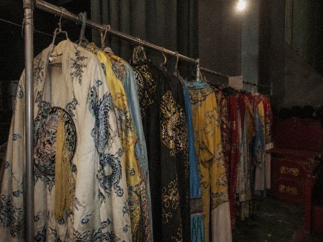

Refiled as WhitePlay
Tongxian Experimental Troupe2014-08-21

The WhitePlay rider accepts this ticket as voiding the night show and moving it to the afternoon. The afternoon show does not write DutyBook. The NightPlay row sits empty. ChengShi finds someone else. You do not go on. You also do not get a refund. The money counts as the afternoon seat.
This receipt is the only one. Tonight cannot be changed.
Back to SMS receipt
WhitePlay refile receipt. Rider treats this ticket as voiding the night show and moving to afternoon. Afternoon show does not write DutyBook. NightPlay row sits empty. ChengShi finds someone else.
WhitePlay seating is not East Row 7. East Row 7 is the night show. Do not bring night-show seats to WhitePlay and look for the row. WhitePlay seats are on the west side. Wood chairs. No letters cut in the backs. No letters because locals know where they sit. Out-of-towners who see this page, it is because you searched WhitePlay. Searched, you can refile. Refile needs the troupe head's signature. Signature means that night row is void. Voided, CurtainUp may still be short a person. Being short is the troupe's matter. You do not go on stage. You also do not get money back. Money stands as the afternoon seat. Rider does not govern added incense. Added incense has to be struck separately. Separate strike goes through the NightPlay three books. Refile only, and the added note may still be there. Last four still there are 0834. 0834 is in the temple, not in the WhitePlay house. WhitePlay house books are clean. Clean only means no out-of-town number. No out-of-town number does not mean the incense side is empty too. Two books. Two books do not match the same people. This receipt is the only one. Tonight cannot be changed. Cannot change back to East Row 7. That night ticket for East Row 7 is already void. Voided and you still sit, sitting counts as trespass. Trespass, Fu Sheng will swear. Sworn, he still makes you come out. Come out and wait for afternoon. Thirty minutes before the afternoon start you can still refund WhitePlay. Refund or not, you look. Looked, do not turn back to the night show. Night show row sits empty. The empty person is not you. Afternoon seats west side. Chairs older than East Row 7. Old ones somebody knows. The somebodies are townspeople. Town does not ask your number. Night ticket gets a void stamp at the window. Stamped, swap for an afternoon slip. Slip is handwritten. No machine ticket number. No ticket number cannot be written into the travel list. That stick outside the house is another matter. You did not turn in three books. Added note may still be there.